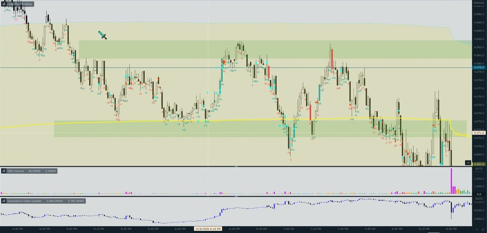
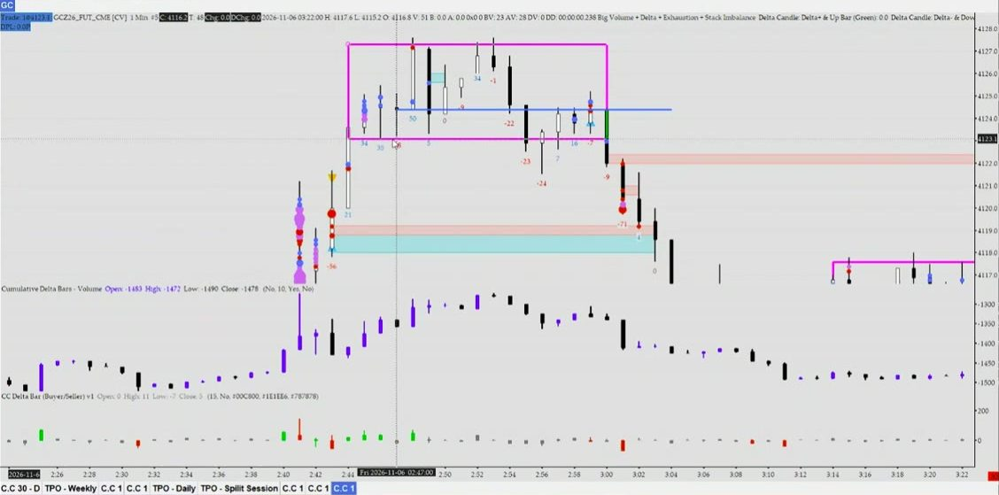
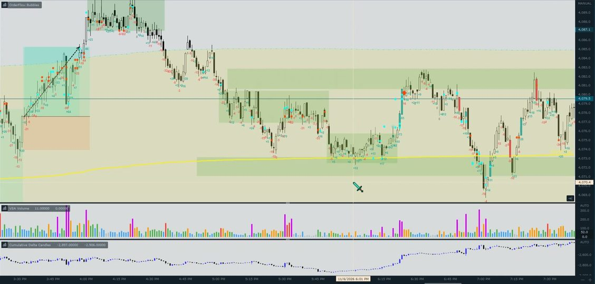
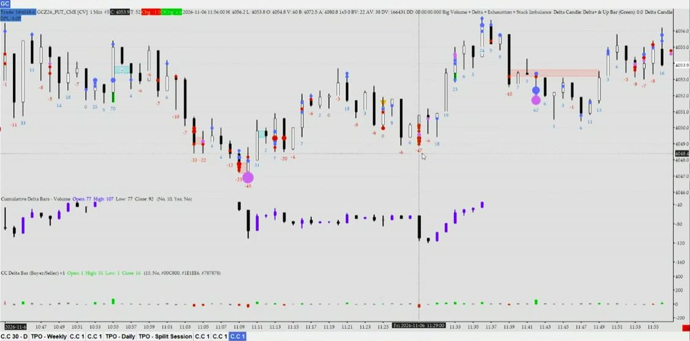
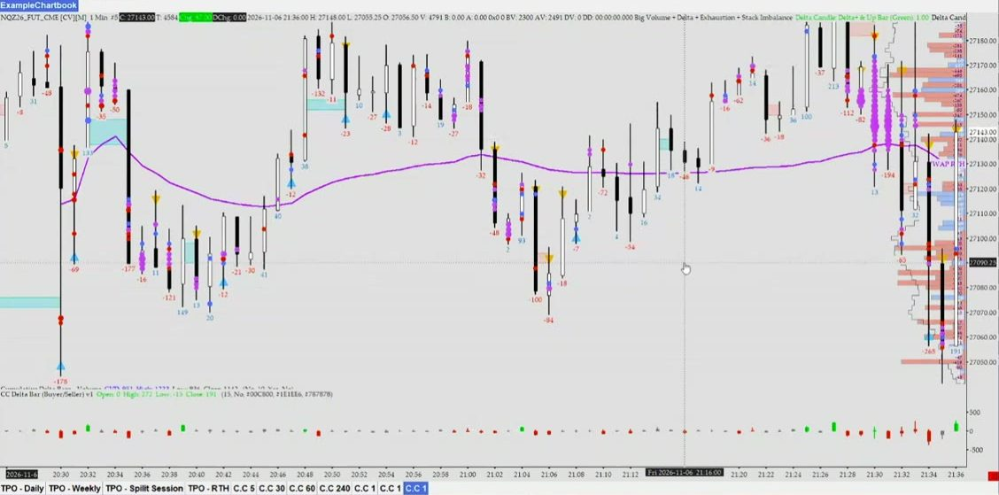
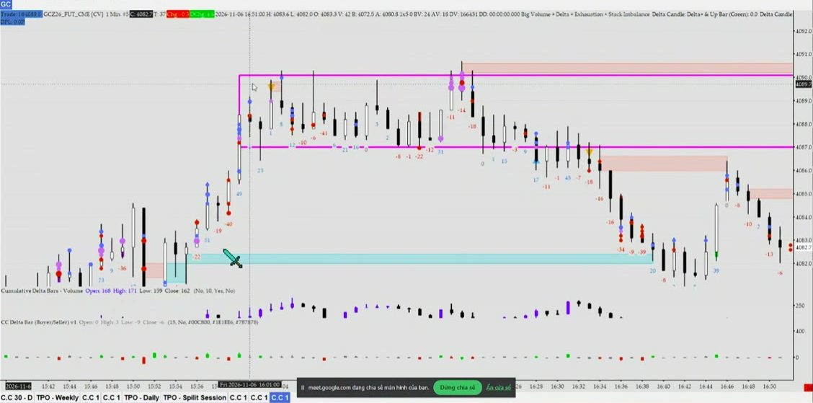

Chi tiết 2.2
Follow theo Orderflow (không cản tàu): mỗi điều kiện ở trang chính được giải thích bằng lời CORVEN, cơ chế, ảnh chart và lỗi hay gặp.
Tổng: thế nào là đủ để vào lệnh
Chữ gốc của 2.2 trong bản tổng hợp CORVEN gửi (02/11/2026):
2.2 Follow theo Orderflow (không cản tàu)
- khi follow phải để ý momentum
- giá không được phép test quá sâu
CORVEN không có một setup đóng khung; ông đánh theo bối cảnh → mốc → xác nhận → lệnh. Ông nhấn nhiều lần rằng không bao giờ vào vì một dấu hiệu đơn lẻ:
0:07:01Phải kết hợp thêm cả bóng (bong bóng lệnh lớn) nữa, chứ không dùng mỗi stacked imbalance.
0:07:38Phải kết hợp với trap: ví dụ trap buy, xong đẩy xuống, tạo ra stacked imbalance sell → dấu hiệu đảo chiều.
0:07:47Nhưng đánh thì kết hợp thêm range mà đánh, đừng đánh mỗi cái đấy. Kết hợp thêm bối cảnh, vẽ range mà đánh.
0:36:21Ví dụ ở đây có cây kiệt sức buy, nhưng lúc sau buy mạnh lên → đảo chiều thì [cần] kiệt sức buy, với lại quan trọng phải phá được cấu trúc — đừng nhìn mỗi cái đấy.
1:05:57Chơi chỗ này hơi khó. Nếu chơi thì chơi những đoạn có nhiều tín hiệu cùng lúc [?] như thế này.
diễn giảiLuật chốt: bối cảnh đúng + giá ở mốc + ≥ 2 dấu hiệu order flow cùng phe + nến đóng xác nhận + đủ 2R. Hai “thế” cùng nằm trong 2.2: thế A trong range thì đánh 2 cạnh; thế B sau khi phá range / phá cấu trúc thì follow theo hướng phá.
Mốc giờ h:mm:ss tính từ đầu buổi Meet 07/11/2026 (0:00:00 = 14:31:28). Lời CORVEN được chép đúng bản chép lời đã soát; […] và [?] giữ nguyên như bản chép. Nhãn diễn giải = phần giải thích của Claude, không phải lời CORVEN. Đây là lời giảng, chưa phải luật đã kiểm chứng bằng số.
① Bối cảnh — biết mình đang ở thế nào
1.1Kẻ range, biết trong hay đã phá
Điều kiện đầy đủĐã kẻ range của khung đang xem (rối thì lên M15). Biết giá đang trong range hay đã phá (phá = nến đóng ngoài cạnh, râu không tính).
Nguyên văn CORVEN
0:12:56Một vùng tích lũy đi ngang thôi là nó là range rồi.
0:13:58Range thì chắc phải khung 15 [?máy ghi "1 năm"; ngữ cảnh là khung lớn hơn M1] … Range dùng khung [15] thôi. M1 thì không dùng đâu, M1 dùng range nhỏ hơn.
0:14:422 vùng chồng nhau thì gộp lại 1 vùng.
0:14:50Cái cạnh range: chỗ nào nó phản ứng nhiều thì lấy làm cạnh.
0:47:51Nếu thấy rối quá thì phải lên khung 15 [?máy ghi "1-5"] — vì nó rõ ràng hơn.
1:04:00Thân nến chứ — phải nến đóng cửa chứ. Dùng nến đóng cửa hết. Sáng nay [?] cũng dùng nến đóng cửa. Không dùng râu nến đâu, râu nến không quan trọng [cho việc phá cấu trúc].
1:04:25Đây cho đây range, range cho đây stop hunt — thấy mấy cái râu nhú nhú xuống không?
Cơ chế
diễn giảiRange là vùng hai phe cùng chấp nhận giá nên giá đi qua đi lại. Cạnh range là nơi một phe đã nhiều lần chặn và đẩy ngược lại, nên lấy chỗ “phản ứng nhiều” chứ không lấy râu nhọn nhất. Râu chọc ra ngoài thường chỉ là quét SL; chỉ khi nến đóng ngoài cạnh mới cho thấy giá được chấp nhận ở bên ngoài.
Nhìn trên chart



Lỗi hay gặp
- Kẻ cạnh theo râu nhọn nhất thay vì chỗ giá phản ứng nhiều lần.
- Thấy râu chọc ra ngoài là coi như đã phá; phải chờ nến đóng.
1.2Trong range đánh 2 cạnh, đã phá thì follow
Điều kiện đầy đủTrong range → chỉ đánh 2 cạnh. Đã phá và giữ được 1–2 nến → chỉ follow theo hướng phá. Không follow giữa lòng range.
Nguyên văn CORVEN
Messenger 07/08Trong balance thì chop / Trong balance thì xác định range rồi 2 cạnh mà vả thôi
Messenger 07/08 20:04Giờ break ra là follow theo chú thích ảnh TPO gộp 3 tuần
0:16:29Khi nó đi range, khi có dấu hiệu range → phải chờ đánh theo range; còn khi nó trend thì mới đánh theo trend.
0:39:16Mấy cái này không có trong [range] nữa thì bỏ — vì break range rồi, chứ không phải như lúc nãy bắt buy lên.
0:40:00Tạo ra được những stacked imbalance đối ngược lại. Thứ hai là nó tạo ra range và break range. Range ở dưới: nếu phá range này thì nó sẽ về range dưới này.
Cơ chế
diễn giảiTrong range, lệnh limit treo ở hai cạnh chặn giá, nên vào ở cạnh và nhắm cạnh đối diện. Khi giá đã phá và giữ được, thị trường đi tìm vùng giá mới; đánh ngược lúc đó là “cản tàu”. Giữa lòng range không có mốc để đặt SL và không đủ khoảng tới cạnh để có 2R.
Nhìn trên chart

Lỗi hay gặp
- Thấy delta hoặc bóng đẹp ngay giữa lòng range rồi follow.
- Range vừa bị phá và giữ được mà vẫn bắt đảo chiều về lại trong range.
1.3Cấu trúc gần nhất còn giữ
Điều kiện đầy đủCấu trúc gần nhất còn giữ đúng hướng mình đánh (chưa có nến đóng qua đỉnh/đáy cấu trúc ngược lại).
Nguyên văn CORVEN
0:18:39Với điều kiện lúc đấy cấu trúc vẫn phải giữ được. Ví dụ cấu trúc buy thì cấu trúc tăng vẫn phải giữ. Nhịp test về mà gãy cấu trúc rồi thì thôi.
0:21:59Vì ở đây nó trap đúng vùng zone này. Với lại cấu trúc đang còn giảm — ít nhất phải phá qua cái đỉnh này thì cấu trúc mới gãy.
0:40:46Cái nến đen này là cái gãy cấu trúc. Cấu trúc [buy] lên trap, còn nổ bóng xanh trên đỉnh. Tăng lên như này, đóng xuống cây đen này, không tăng lên tiếp → gãy.
0:42:23HV: Tưởng phải vài cây nến cho nó mạnh hơn? — Chỉ cần một cái nến thôi.
0:42:34Cấu trúc khả năng là ở đây, ở đây — đây là cái đỉnh/đáy cấu trúc buy với sell. Chỉ cần nhỏ thôi, gần nhất thôi.
0:43:09Một cái là gãy cấu trúc giảm, một cái là hình thành cấu trúc tăng: tạo 2 đỉnh đáy cao dần cũng là cấu trúc tăng.
0:43:53Nó phá thì phải giữ được ở [vùng] dưới thì mới tính. Phá mà rút râu luôn thì khả năng là fail.
Cơ chế
diễn giảiĐỉnh/đáy cấu trúc gần nhất là nơi phe đang thắng phải giữ. Một nến đóng qua mốc đó nghĩa là phe kia đã giành được giá, nên lệnh theo hướng cũ mất cơ sở. Nến phá mà rút râu về lại thì chưa tính là gãy.
Nhìn trên chart

Lỗi hay gặp
- Chờ nhiều nến mới công nhận gãy, vào lệnh khi cấu trúc thật ra đã gãy.
- Nhầm cấu trúc nhỏ trong cấu trúc lớn (0:49:20: “một sóng tăng nhỏ trong một sóng giảm to”).
② Mốc — không đuổi giá, chờ giá về mốc gần
2.1Giá đang ở mốc gần
Điều kiện đầy đủGiá đang ở mốc gần: cạnh range (hoặc cạnh vừa phá, retest), stacked imbalance mới tạo cùng hướng, đỉnh/đáy cấu trúc vừa gãy. Mốc xa / stacked đã bị chạm nhiều lần → bỏ.
Nguyên văn CORVEN
0:06:54Dùng gần thôi, đừng dùng xa.
0:17:58Ví dụ khi nó tạo stacked imbalance được, thì dùng ở đấy để follow, dùng làm mốc tham chiếu — để giá về đấy xem phản ứng trước rồi mới buy lên.
0:18:21Ví dụ buy, có stacked [imbalance] gần này, nó lên, xong quay lại test stacked gần → chơi.
0:19:38Cái stacked imbalance này xấu hơn cái ở trên vì: nhìn vị trí stacked imbalance trong cây nến — nó nằm gần đỉnh nến, gần râu; còn cái này nằm giữa nến. Với lại cấu trúc bị gãy.
0:20:12Ở đây nó tạo ra 1 stacked imbalance 3 lần sell, mà bên trên nó chạm một mớ ở đây, tạo stacked 3 lần → cái stacked này vứt luôn, không dùng nữa. Cấu trúc thì gãy.
1:05:32[Stacked imbalance] xa tít thì không dùng, mấy cái ở gần thì dùng được.
Cơ chế
diễn giảiMốc là chỗ phe vừa đẩy đã để lại dấu vết (vùng chênh lệch lệnh, cạnh range). Mốc càng mới, càng gần thì lệnh của phe đó càng có khả năng còn nằm ở đấy để bảo vệ. Mốc đã bị chạm nhiều lần thì lệnh ở đó đã khớp hết, không còn giá trị.
Nhìn trên chart

Lỗi hay gặp
- Dùng stacked imbalance từ đầu phiên, ở rất xa giá hiện tại.
- Đuổi theo nến đang chạy thay vì chờ giá hồi về mốc.
2.2Nhịp test không quá sâu
Điều kiện đầy đủNhịp test không quá sâu: không xuyên qua vùng stacked, không đóng ngược lại qua cạnh vừa phá. Đánh fail break thì giá phải đã đóng lại trong lòng range.
Nguyên văn CORVEN
Tổng hợp 02/11giá không được phép test quá sâu
0:06:29Ví dụ chỗ này tạo ra nhiều stacked imbalance sell, mà lên nó không giữ được giá, đâm thủng ngược lên → thì đảo chiều thôi.
0:08:05Đoạn này nó tạo ra range, xong break xuống. Nó không có dấu hiệu gì, đâm ngược lại vào → vẫn ở trong range.
0:08:16Đoạn này nó lên, break ngược lên trên. Chưa vội buy luôn, vì chỗ này chưa có dấu hiệu gì.
0:08:29Trap đỉnh ở đây, xong đẩy ngược vào lòng range, mà đẩy ngược vào range lại tạo ra stacked imbalance sell → lúc đó tìm tín hiệu sell xuống. Khi nó fail break thì tìm tín hiệu sell.
1:00:02HV: Nó có tín hiệu mà chưa vào lòng range đúng không? Điều kiện là phải vào lòng range à? — Ừ, phải vào lòng range nữa.
Cơ chế
diễn giảiNếu nhịp hồi xuyên qua vùng stacked hoặc đóng ngược qua cạnh vừa phá, phe vừa đẩy đã không bảo vệ mốc của mình, nên mốc hỏng. Với fail break thì ngược lại: chỉ khi nến đã đóng trở lại trong range mới chứng tỏ cú phá thất bại.
Nhìn trên chart

Lỗi hay gặp
- Vào fail break khi nến vẫn còn đóng ngoài range (xem ví dụ 3).
- Giữ ý định follow dù nhịp hồi đã xuyên qua vùng stacked dùng làm mốc.
③ Xác nhận tại mốc — cần ≥ 2 dấu hiệu cùng phe
3.1Delta đồng thuận và có lực
Điều kiện đầy đủDelta đồng thuận và có lực: cùng chiều giá, to và thẳng; delta nhỏ lình xình hoặc ngược giá → không vào.
Nguyên văn CORVEN
0:31:20Đây là cái đáy, đáy quan trọng. Khi retest xuống chỗ này, delta đẩy đà nó phá đáy này, nhưng giá không phá đáy — chỉ là nó bị hấp thụ.
0:31:42Delta phải đi theo giá thì mới đồng thuận. Còn nó đi ngược giá là bị hấp thụ, bị kiệt sức.
0:34:08Cái này để xem delta to hay nhỏ. … Buy mà delta nhỏ, lình xình thì để ý vào.
0:35:42Muốn buy hay sell mà đánh đảo chiều: ví dụ đoạn này đánh đảo chiều vòng lên mà thấy delta nhỏ thì không chơi được.
0:35:55Delta dương nhưng nhỏ thì không đánh được. Muốn đảo chiều thì delta phải dương to lên, thẳng lên.
0:45:48Xong tìm xem có tín hiệu buy vào không thì buy lên. Cứ nhìn xem delta có đi lên không, hay buy có khỏe không.
Cơ chế
diễn giảiDelta là lượng lệnh market buy trừ lệnh market sell. Giá đi cùng chiều delta nghĩa là lệnh chủ động đang thật sự đẩy được giá. Delta lớn mà giá không đi là lệnh chủ động bị limit phía kia hấp thụ; delta nhỏ là phe đẩy chưa thật sự vào.
Nhìn trên chart


Lỗi hay gặp
- Vào đảo chiều khi delta cùng chiều nhưng chỉ nhỏ, lình xình.
- Thấy delta âm lớn là sell ngay mà không xem giá có đi theo không.
3.2Bóng đúng phe nổ ở mốc
Điều kiện đầy đủBóng đúng phe nổ ở mốc: bóng xanh ở đáy nhịp hồi (buy) / bóng đỏ ở đỉnh nhịp hồi (sell), nằm ở phần nến phía mình đẩy.
Nguyên văn CORVEN
0:24:28Đây nhiều SL, mà thấy nổ bóng xanh → chắc chắn ở đây không phải người mua thật rồi.
0:26:48Cùng 1 lệnh buy chủ động nhưng có 3 hành vi: 1. Ép người bán phải cắt lỗ (giá hồi lên chỗ này ép người sell cắt lỗ). 2. Muốn mua thật. 3. Lệnh thoát lệnh sell (chốt lời sell).
0:27:22Phải đặt bối cảnh vào để nhìn, chứ không phải cứ thấy bóng xanh là bảo mua. Nó chốt lời? Nó cắt lỗ?
0:46:03Như đoạn này stop hunt: có bóng đỏ → chắc chắn stop. Nếu buy thì đặt SL dưới cái đáy này. Nhưng chỗ này chưa buy được.
0:46:13Delta buy với bóng xanh phải vào [thì mới có tín hiệu]. Đoạn này trap xong, buy có vào đâu — thấy không, nó nhỏ mà. Cây 10 kia cũng không vào được: nhỏ mà, không có bóng xanh.
Ý “nằm ở phần nến phía mình đẩy” lấy từ bản chốt tháng 7/2026 (CORVEN_SPEC_V1.md §4 KB-C): bóng lệnh lớn nằm ở 30 % dưới của nến, delta xanh, thân vừa đủ dài, đóng đẹp (sell thì đối xứng). Đây là ghi chép lại, không phải câu nguyên văn trong buổi Meet.
Cơ chế
diễn giảiBóng là lệnh market lớn. Cùng một bóng xanh có thể là buy thật, buy để cắt lỗ sell, hoặc buy để chốt lời sell. Ở đáy nhịp hồi sau khi đã phá lên, bóng xanh nhiều khả năng là buy thật; ở ngay trên đỉnh range, bóng xanh thường là buy-stop bị quét. Vì vậy bóng chỉ có nghĩa khi đặt vào vị trí.
Nhìn trên chart

Lỗi hay gặp
- Thấy bóng xanh là buy, không hỏi bóng đó là buy thật, cắt lỗ hay chốt lời.
- Coi bóng nổ ngay trên cạnh range là xác nhận phá, trong khi đó có thể là quét SL.
3.3Phe ngược kiệt sức
Điều kiện đầy đủPhe ngược kiệt sức ở râu nến tại mốc (đáy: Bid ≈ 0 → buy; đỉnh: Ask ≈ 0 → sell) và chưa bị râu quét qua.
Nguyên văn CORVEN
0:10:25Kiệt sức: ở đỉnh thì xem bên Ask, ở đáy thì xem bên Bid.
0:10:30Thấy nó nhỏ là được — nhỏ, hoặc giảm dần về 0 [?] là được.
0:33:14[Kiệt sức] lấy ở râu nến thôi, đừng lấy ở thân nến. Số kiệt sức là ở râu nến.
0:33:55Màu vàng là kiệt sức buy, màu xanh là kiệt sức sell. (chấm màu trên chart Sierra của người giảng)
0:54:05Kiệt sức đáy: điều kiện là giá phải quét qua được cái đáy này thì kiệt sức mới bị vô hiệu, thì mới chơi [sell] được.
0:54:13HV: Quét qua, hay phải đóng nến ở dưới? — Quét qua là được rồi, không cần [đóng nến].
0:54:43Đỉnh thì kiệt sức buy — đỉnh không có người mua. Đáy thì kiệt sức sell — đáy không có người bán. Chỉ cần quét qua là có người mua lại / có người bán lại rồi — không còn kiệt sức nữa.
Cơ chế
diễn giảiỞ đỉnh, nếu cột Ask gần 0 thì không còn ai buy chủ động ở giá cao nhất, phe buy hết sức đẩy. Nếu giá quay lại quét qua đúng mức đó thì đã có người giao dịch lại, nên dấu hiệu mất hiệu lực. Ba cách dùng râu nến khác nhau, đừng lẫn: phá cấu trúc / phá range cần đóng nến; vô hiệu kiệt sức chỉ cần râu quét qua; đo kiệt sức thì lấy số ở râu.
Nhìn trên chart


Lỗi hay gặp
- Lấy số kiệt sức ở thân nến thay vì ở râu.
- Vẫn tin kiệt sức sau khi giá đã quét râu qua mức đó.
3.4Stacked imbalance mới cùng hướng
Điều kiện đầy đủStacked imbalance mới cùng hướng vừa hình thành ở mốc (nằm giữa thân nến, giá đi tiếp sau đó).
Nguyên văn CORVEN
0:03:14Đây là stacked imbalance sell, đây là stacked imbalance buy — nó là một vùng chứ không phải một điểm.
0:03:35Còn nếu nó ở giữa thân nến thì nó mới khỏe.
0:03:40Hoặc nó ở đỉnh nến cũng được, nhưng sau đấy giá phải đi lên tiếp.
0:03:45Chứ nó ở đỉnh nến xong bị rút râu xuống thì cũng không đẹp lắm.
0:03:56Đây nhé, nó so chéo Ask với Bid, người ta hay để gấp 3, [người giảng] đang để 250%.
0:05:36Với lại cái trap đấy — ví dụ nó tạo ra xong nó phá cấu trúc — thì nó sẽ mạnh.
Cơ chế
diễn giảiStacked imbalance là nhiều mức giá liên tiếp mà một phe market áp đảo phe kia (so chéo Ask với Bid, 250–300 %). Nằm giữa thân nến nghĩa là sau khi áp đảo, giá còn đi tiếp, tức là lực đẩy thật. Nằm sát râu rồi giá rút về nghĩa là lực đó đã bị chặn lại.
Nhìn trên chart

Lỗi hay gặp
- Dùng stacked nằm sát râu, giá đã rút ngược lại ngay.
- Dùng stacked một mình, không kèm bóng, trap hay range (0:07:01, 0:07:47).
3.5Trap / stop hunt phe ngược
Điều kiện đầy đủTrap / stop hunt phe ngược vừa xảy ra: râu quét mốc quan trọng + nổ bóng, rồi đẩy ngược về.
Nguyên văn CORVEN
0:09:42… fail break đâm ngược vào, bóng xanh nổ, trap, sell, stop hunt, đẩy ngược vào → buy được.
0:23:45HV: Stop hunt là gì? — [Stop hunt] là quét SL: ví dụ nó quét qua cái đỉnh này mà nổ bóng thì là stop hunt.
0:23:57Cái mốc đấy phải là một cái mốc quan trọng. Nó có thể xuất hiện ở nhiều nơi, nhưng phải xác định được đâu là điểm quan trọng — thì biết là chỗ đấy dễ có người đặt SL.
0:24:11Ví dụ trên này đi range, thì thường người ta đặt SL trên đỉnh này một tí, hoặc nói chung là quanh cạnh range bên trên một tí.
0:24:34SL ở đây là lệnh buy-stop, mà lệnh buy-stop cũng là nổ bóng xanh.
Cơ chế
diễn giảiSL của phe sell nằm ngay trên cạnh range; khi giá chọc lên, các SL này khớp thành lệnh buy market, nổ bóng xanh. Nếu sau đó giá quay ngay vào trong, lượng buy đó không phải buy thật mà là phe sell bị ép thoát; phe đặt bẫy đã lấy được thanh khoản và đẩy giá đi hướng ngược lại.
Nhìn trên chart


Lỗi hay gặp
- Gọi mọi râu là stop hunt, kể cả râu ở chỗ không phải mốc quan trọng.
- Vào ngay khi râu vừa quét, chưa chờ giá đẩy ngược về và nến đóng.
④ Vào lệnh
4.1Nến xác nhận đã đóng
Điều kiện đầy đủNến xác nhận đã đóng: thân vừa đủ, đóng sát cực trị, không rút râu dài. Sau fail break chờ 1–2 nến giữ được trong range.
Nguyên văn CORVEN
Messenger 08–09/02Chú xem cây giảm vol có ngon k / Đóng có đẹp k / Mấy cây giảm đóng râu dưới vẫn rút kìa
0:08:46HV: Cái âm 23 [?] đấy chơi được không? — Chơi được. Hoặc cẩn thận thì chờ 1–2 cây sau xem nó có giữ được trong range không.
0:37:44Vì nó bị rút râu nên phải chờ đoạn này tạo ra được stacked imbalance ở đây, may ra đến cây này chơi mới được.
0:43:53Nó phá thì phải giữ được ở [vùng] dưới thì mới tính. Phá mà rút râu luôn thì khả năng là fail.
Cơ chế
diễn giảiNến đóng sát cực trị nghĩa là phe đẩy giữ được giá tới phút cuối. Râu dài ngược hướng nghĩa là phe kia đã kéo lại được, xác nhận yếu đi. Chờ nến đóng (và sau fail break chờ thêm 1–2 nến) để không vào theo một cú chọc chưa hoàn tất.
Nhìn trên chart
Lỗi hay gặp
- Vào khi nến chưa đóng, rồi nến rút râu dài ngược lại.
- Sau fail break vào ngay ở nến đầu tiên đóng lại trong range mà không xem các nến sau có giữ được không.
4.2SL sau mốc quan trọng gần nhất
Điều kiện đầy đủSL sau mốc quan trọng gần nhất (dưới đáy vừa quét / trên đỉnh yếu), không đặt sát.
Nguyên văn CORVEN
0:50:18Muốn chơi thì vẫn được, nhưng phải đặt dừng lỗ trên cái đỉnh này.
0:50:25HV: Sao xa thế, không đặt ngay dưới cái kia? — Đặt gần thì dễ bị quét. Nhiều lúc nó quét râu lên, không đóng nến lên nhưng vẫn quét râu. Còn chỗ này quan trọng, đặt ở đây khó bị quét hơn.
0:51:16HV: Chơi được ở K4 hay K5 [?] không? — SL phải ở dưới này; nếu SL bị xa quá thì thôi.
0:51:25HV: Tưởng đặt dưới đáy chỗ quét SL? — Ừ, đặt dưới cái đáy mới quét [cái đáy vừa bị quét].
Cơ chế
diễn giảiSL đặt sát thì nằm đúng vùng râu hay quét, bị quét dù hướng lệnh đúng. Đặt sau mốc quan trọng thì nếu giá qua được mốc đó, lý do vào lệnh đã sai thật. Nếu mốc ấy xa tới mức không còn 1,7R thì bỏ lệnh, không kéo SL lại gần cho đủ R.
Nhìn trên chart

Lỗi hay gặp
- Đặt SL vài giá sát điểm vào cho đẹp R, rồi bị râu quét.
- SL xa quá vẫn vào, chấp nhận R:R dưới 1,7.
4.3Đủ 2R tới mục tiêu
Điều kiện đầy đủTừ điểm vào tới mục tiêu (cạnh đối diện / mốc kế) ≥ 2R (1,7R chấp nhận). TP đặt 2R. Không đủ → không chơi, kể cả 1R.
Nguyên văn CORVEN
0:58:13Nếu không 2R thì không chơi nữa — kể cả 1R [cũng không].
0:58:29Nếu vào lệnh sâu quá thì nó sẽ thành 1,5R hay 1R thôi.
0:58:35Cứ xác định từ chỗ vào đến [cạnh] range này 1,7R — nó sấp sỉ 2R rồi thì có thể [chơi], vì nhiều lúc nó quét râu qua rồi cũng chạy luôn.
0:58:49Tầm 1,7R là được. Nhưng TP vẫn cứ đặt 2R.
Bản chốt tháng 7/2026 ghi “mỗi kịch bản cố định 1:3”. Buổi Meet 07/11 nói tối thiểu 2R. Xem bảng mâu thuẫn.
Cơ chế
diễn giảiĐánh theo xác nhận thì tỷ lệ thắng không cao, nên phần thắng phải lớn hơn hẳn phần thua. Mục tiêu tự nhiên là cạnh đối diện hoặc mốc kế tiếp; nếu khoảng tới đó không đủ 1,7 lần SL thì dù tín hiệu đẹp cũng bỏ.
Nhìn trên chart

Lỗi hay gặp
- Vào muộn (“vào lệnh sâu quá”) nên chỉ còn 1–1,5R tới cạnh đối diện.
- Chấp nhận 1,7R rồi đặt TP luôn ở 1,7R; CORVEN vẫn đặt TP 2R.
4.4Đóng trong ngày, không nhồi lệnh
Điều kiện đầy đủĐóng trong ngày, không nhồi lệnh.
Nguồn
Messenger 05/02nay t méo nhồi nữa / nhồi hay quét vl / vào một phát to mẹ luôn
“Đóng trong ngày” lấy từ bản chốt tháng 7/2026 (CORVEN_SPEC_V1.md: “Chỉ trong ngày. Không qua đêm”); đây là ghi chép tổng hợp, buổi Meet 07/11 không nhắc lại.
Cơ chế
diễn giảiNhồi thêm lệnh khi giá đi đúng hướng làm giá vốn xấu đi và SL chung bị kéo gần, nên một cú quét có thể lấy cả lãi lẫn vốn. Lệnh scalp theo order flow sống trên tín hiệu M1 trong phiên; để qua đêm là giữ lệnh khi tín hiệu đã hết hiệu lực.
⛔Không vào khi
- Delta nhỏ, "buy không vào" (không có bóng) · Kiệt sức đang chống lại hướng mình đánh · Tín hiệu còn ngoài range
- Nhịp đẩy do quét stop (chạy mạnh, không đi xa) · Range chồng range, đoạn đi xấu · Đấu giá vừa xong (profile nhọn, đều 2 cạnh) → chờ break
Nguyên văn CORVEN
0:35:55Delta dương nhưng nhỏ thì không đánh được. Muốn đảo chiều thì delta phải dương to lên, thẳng lên.
0:46:13Delta buy với bóng xanh phải vào [thì mới có tín hiệu]. Đoạn này trap xong, buy có vào đâu — thấy không, nó nhỏ mà. Cây 10 kia cũng không vào được: nhỏ mà, không có bóng xanh.
0:53:05Vì cái âm 34 [?] này: ví dụ kiệt sức ở đỉnh là kiệt sức buy, đáy bị kiệt sức sell. Sell xuống, đáy bị kiệt sức lúc đấy → hơi không muốn sell.
0:59:37HV: Cây K23 [?] sao không vào? — Vì nó vẫn ở ngoài range, mà tín hiệu mới có mỗi một cái.
0:27:59Đoạn cây to đùng như thế này thì khả năng những lệnh sell này không phải muốn sell, mà là lệnh của bên buy chỗ này bị SL — buy chỗ này bị quét mạnh thì phải cắt lỗ bằng lệnh sell chủ động.
0:45:02Đoạn này đi hơi xấu. Đoạn này range chồng range thì khó.
0:48:28Đoạn này quét cũng kiểu chưa dứt khoát. Đoạn retest lên trên này có thể xem, nhưng cấu trúc gãy rồi.
“Đấu giá vừa xong (profile nhọn, đều 2 cạnh) → chờ break” là ghi chú cuối của người học trong file gốc. Vế “không đi xa” trong “nhịp đẩy do quét stop” là diễn giải: lượng lệnh cắt lỗ chỉ đẩy giá một đoạn ngắn rồi hết.
Ba ví dụ trọn vẹn
Ráp từng bước vào checklist là diễn giải của Claude dựa trên lời CORVEN và ảnh. Con số đọc trên ảnh là xấp xỉ theo trục giá.
Ví dụ 1 — Fail break đỉnh range → sell (GCZ26, 05/11, 21:04–21:33)
0:56:49Đánh range thì đánh ở đây — đọc bối cảnh vào là đánh. Lên đây yếu, fail break range, nhìn delta: delta giảm dần, xong đóng ngược lại vào range → sell, SL trên đỉnh yếu này được không? — [được].
0:58:35Cứ xác định từ chỗ vào đến [cạnh] range này 1,7R — nó sấp sỉ 2R rồi thì có thể [chơi], vì nhiều lúc nó quét râu qua rồi cũng chạy luôn.
0:58:49Tầm 1,7R là được. Nhưng TP vẫn cứ đặt 2R.
- ① Bối cảnh: giá đang trong range ≈ 4130,5–4135,5 → thế A, chỉ đánh cạnh.
- ② Mốc: giá lên cạnh trên, chọc ra ngoài rồi đóng lại trong lòng range (fail break).
- ③ Xác nhận: delta ngược giá (giá tăng, delta cộng dồn giảm) + nến đóng ngược lại vào range = 2 dấu hiệu cùng phe sell.
- ④ Lệnh: SL trên đỉnh yếu vừa chọc; mục tiêu cạnh dưới; R/R đo được 1,71 → chấp nhận, TP đặt 2R.
- Diễn biến trên ảnh: giá về sát cạnh dưới ≈ 4130,5 lúc ≈ 21:26–21:28. Sau đó lúc ≈ 21:30 có nến tăng vọt lên ≈ 4142 rồi giá rơi mạnh về ≈ 4128 (ngoài phạm vi lời giảng).
Ví dụ 2 — Phá range → retest + stacked + đỉnh kiệt sức → sell
0:20:31Hoặc đây: cấu trúc, bối cảnh với range. Trap phá range đâm xuống, retest lên range, retest luôn cái stacked imbalance này → sell xuống. Chỗ này đỉnh kiệt sức nữa (thấy cái bóng không?).
- ① Bối cảnh: range đã bị phá xuống (thế B) → chỉ tìm sell theo hướng phá.
- ② Mốc: giá hồi lên retest cạnh range vừa phá, trùng vùng stacked imbalance sell mới tạo.
- ③ Xác nhận: stacked imbalance sell mới + đỉnh kiệt sức buy (tam giác vàng) + bóng ở đỉnh = ≥ 2 dấu hiệu cùng phe sell.
- ④ Lệnh: SL trên đỉnh nhịp retest; mục tiêu mốc kế phía dưới, đủ 2R mới vào.
Ví dụ 3 — Chưa vào lòng range → không vào; xác nhận lần 2 → vào buy
0:59:37HV: Cây K23 [?] sao không vào? — Vì nó vẫn ở ngoài range, mà tín hiệu mới có mỗi một cái.
1:00:02HV: Nó có tín hiệu mà chưa vào lòng range đúng không? Điều kiện là phải vào lòng range à? — Ừ, phải vào lòng range nữa.
1:00:09Nhưng đến cây này: chưa vào lòng range nhưng nó confirm lại lần 2 rồi — nó trap đáy một lần nữa và bị kiệt sức đáy → vào được.

- ① Bối cảnh: trong range → đánh cạnh dưới (thế A, buy).
- ② Mốc: giá chọc xuống dưới cạnh dưới; lần đầu nến vẫn ở ngoài range → điều kiện “đóng lại trong lòng range” chưa đạt.
- ③ Xác nhận: lần đầu mới có một tín hiệu → không vào. Lần 2: trap đáy thêm lần nữa + kiệt sức sell ở đáy = 2 dấu hiệu → CORVEN cho vào dù chưa vào lòng range (1:00:09).
- ④ Lệnh: SL dưới đáy vừa quét (≈ 4121); mục tiêu cạnh trên range ≈ 4126,5 trở lên.
Ví dụ này cho thấy điều kiện “phải vào lòng range” có ngoại lệ do chính CORVEN nêu: khi đã có xác nhận lần 2 (trap đáy lần nữa + kiệt sức đáy).
Mâu thuẫn trong nguồn và cách chốt
Nguồn cũ (tin nhắn CORVEN tháng 5–8/2026, bản chốt tháng 7/2026) và buổi Meet 07/11 có chỗ khác nhau. Không giấu, ghi rõ để biết vì sao trang chính chọn như vậy.
| Vấn đề | Nguồn cũ | Nguồn mới | Chốt |
|---|---|---|---|
| R:R (tỷ lệ lời : lỗ) | Bản chốt tháng 7/2026: “mỗi kịch bản cố định 1:3” | Meet 07/11 0:58:13–0:58:49: “không 2R thì không chơi… 1,7R được, TP vẫn 2R” | Tối thiểu 2R (1,7R chấp nhận), TP đặt 2R. Ghi chú bản 7/2026 nói 1:3. |
| SL | Tin nhắn CORVEN tháng 5/2026 (R7): SL 2–4 giá, dưới cây M1 | Meet 0:50:25: “đặt gần thì dễ bị quét… đặt dưới cái đáy mới quét”; 0:51:16 “SL xa quá thì thôi” | SL sau mốc quan trọng gần nhất (đáy/đỉnh vừa quét, cạnh range); không sát; xa quá không đủ 1,7R thì bỏ. |
| Fail break | Tin nhắn CORVEN tháng 5/2026 (W3): “đừng đánh UT sớm, sang D mới đánh” — UT = cú phá hụt lên trên đỉnh range; sang D = giai đoạn sau khi đã có cú phá hụt, giá phá thật và giữ được | Meet: fail break → tìm tín hiệu ngược, “chờ 1–2 cây xem giữ được trong range không” (0:08:46), “phải vào lòng range” (1:00:02) | Fail break một mình chưa đủ: cần đóng lại trong range + xác nhận order flow + 2R tới cạnh đối diện. |
| Follow khi nào | “không cản tàu” | Tin nhắn CORVEN tháng 8/2026 (R13): trong range thì không follow giữa lòng range | Follow chỉ sau khi đã phá (đóng nến + giữ được); trong range chỉ đánh cạnh. |
Nguồn: corven-meet/2026-11-07/transcript.md (bản chép lời đã soát, ảnh cắt từ frames/, chỉ giữ vùng chart) · data-export/messages-with-pro-trader/TRANSCRIPT.md §7, §8, §13 · CORVEN_SPEC_V1.md (bản chốt tháng 7/2026) · bản tổng hợp của CORVEN 02/11/2026. Đây là lời giảng, chưa phải luật đã kiểm chứng bằng số.